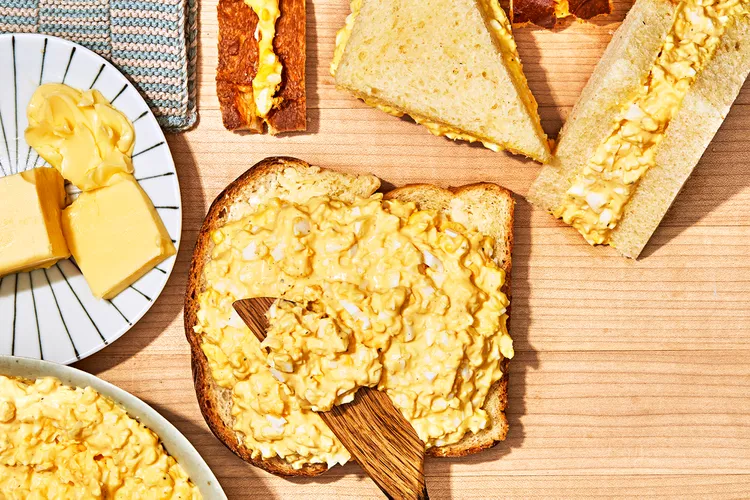

Egg Salad

Description
A recipe for Japanese egg salad just like they have at the 7/11.
Ingredients
- 5 large eggs
- 1/4 cup Kewpie mayo
- 1/2 teaspoon salt
- 1/2 teaspoon sugar
- 1/8 teaspoon pepper
- 2 teaspoon heavy cream
- 1 tablespoon butter
<1i>2 slices of bread
Steps
- Bring a medium saucepan of water to a boil over medium-high. Using a slotted spoon, carefully lower eggs into boiling water; cook 11 minutes. Remove eggs using a slotted spoon, or carefully drain into a sink. Plunge eggs into a bowl filled with ice water and let stand until cool, about 15 minutes. Drain well. Carefully peel eggs.
- Using your hands, split eggs open; separate yolks and whites. Place yolks in a medium bowl and mash using the back of a fork until broken down and a few chunks remain; set aside. Finely chop egg whites; place in a small bowl and set aside.
- Add mayonnaise, salt, sugar, and pepper to mashed yolks in bowl; gently stir until mixture is combined and some chunks remain. (Mixture should not be too chunky or a paste.)
- Add half of the chopped egg whites to yolk mixture in medium bowl; reserve remaining egg whites for another use. Gently fold whites into yolk mixture until just coated. Chill for 1 hour.
- Stir cream into chilled egg mixture; season with additional salt to taste. Set aside. Spread butter evenly over one side of each bread slice. Top one slice, butter side up, with egg salad. Cover with remaining slice, butter side down. Trim off and discard crust; cut sandwich in half diagonally so you have two triangles. Serve.
Back to Home